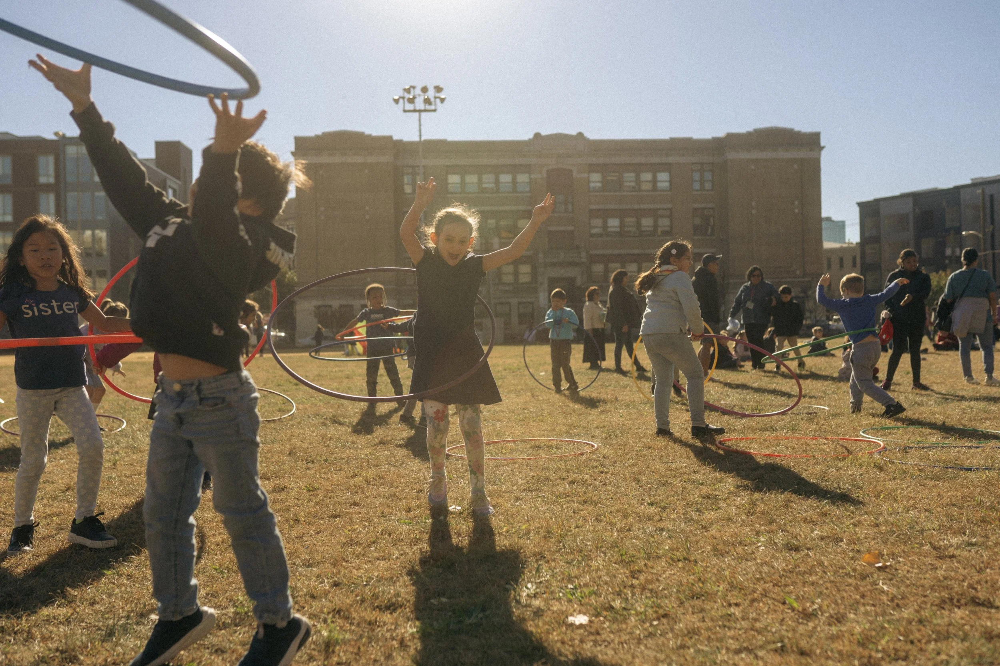

What We Do
The PS5 PTA is a National PTA member and 501(c)3 charitable organization. We fundraise to provide enrichment programs including theater, dance, assemblies, multicultural celebrations, school improvements, carnivals, awards, and family support.
- Promote child welfare in schools and communities
- Host fundraisers and coordinate volunteers
- Support after school programs
- Encourage teachers and administration
- Foster parent-teacher collaboration
Questions or ideas? Reach us at jerseycityps5pta@gmail.com.

